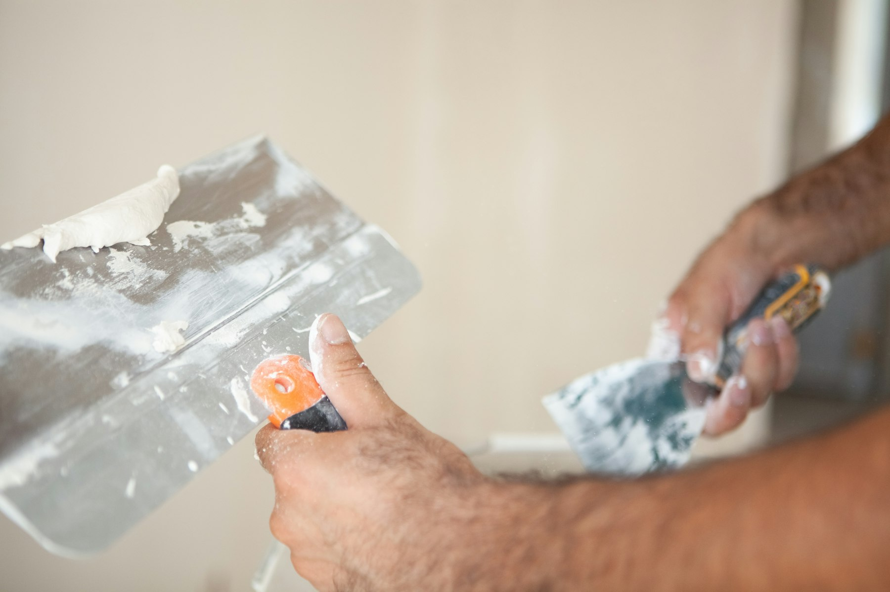
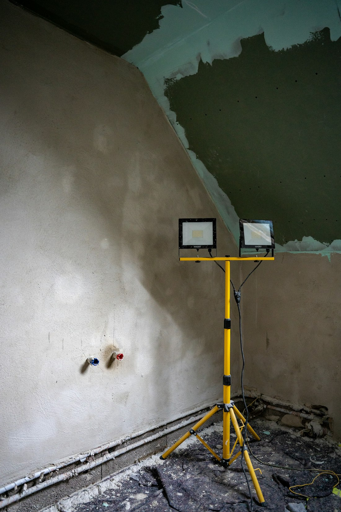
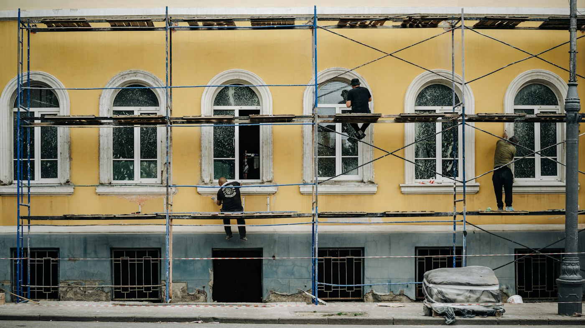
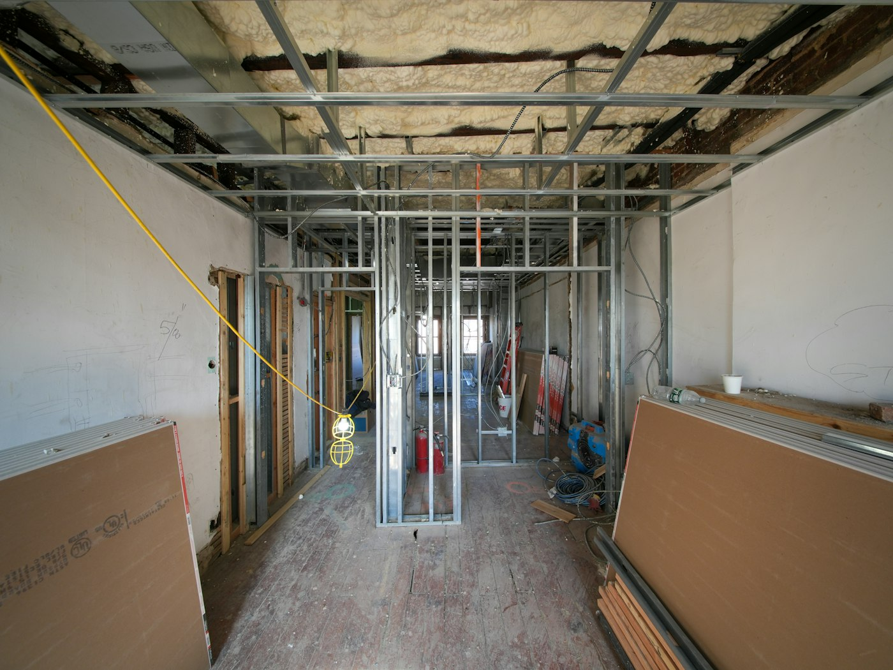
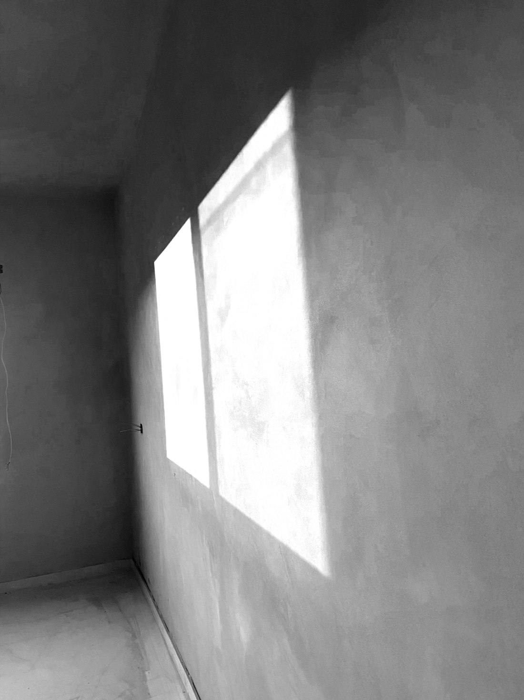
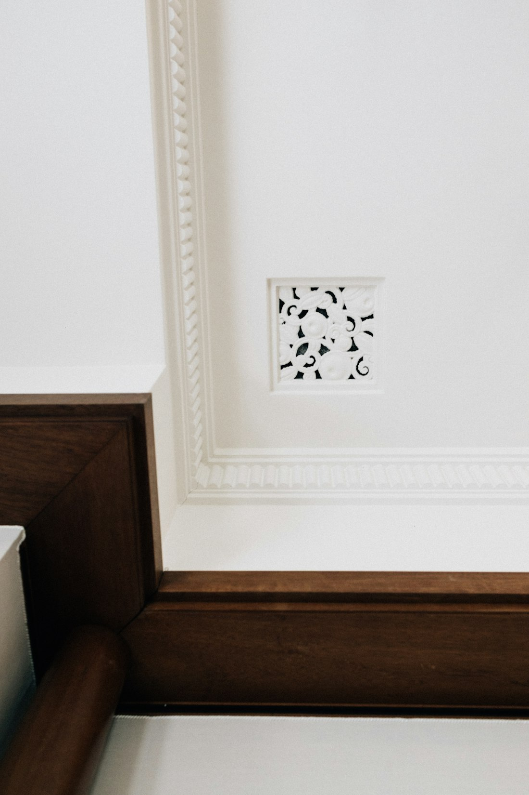
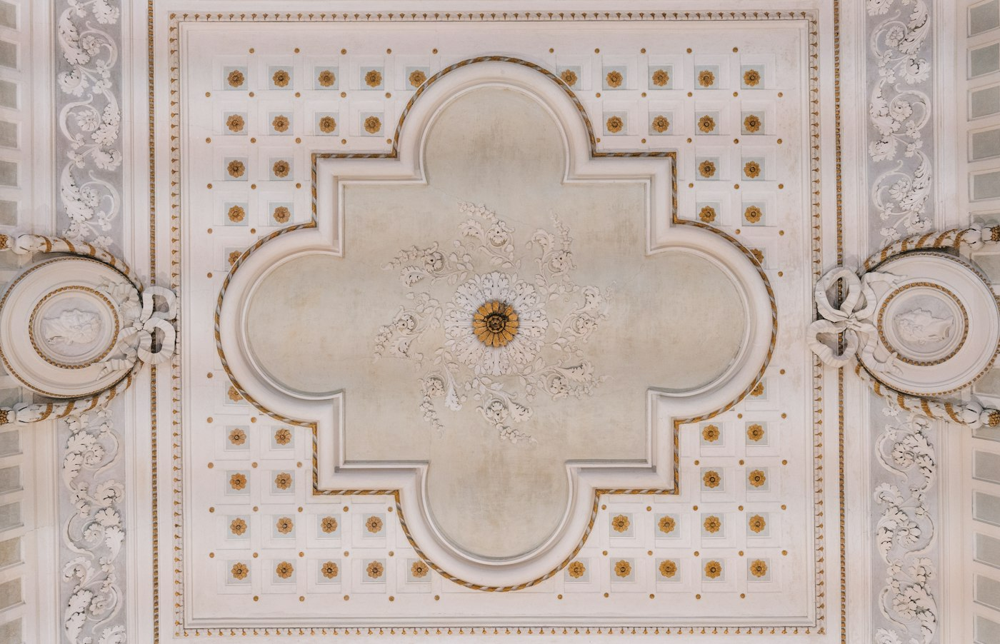

Arteedil di Angelo Albanese
Intonaci, facciate, cornici.
Intonaci, facciate, isolazione termica, cartongesso, stucco veneziano e cornici. Il lavoro che si vede per primo, fatto a Gordola dal 2008.
01 · Lavori
Sette lavori, un solo interlocutore.
Dalla parete grezza alla finitura lucida. Aprite una voce per vedere cosa comprende.
Intonaci interni ed esterni, dal fondo alla finitura, per case nuove e per muri da rifare.

Facciate da rinnovare o risanare: intonaco esterno, riparazioni, contorni.

Isolamento delle pareti per una casa che tiene il caldo d'inverno e il fresco d'estate.
Pareti, contropareti e controsoffitti a secco, puliti e veloci da montare.

Finitura a spatola, strato su strato, per pareti che prendono la luce.

Cornici a soffitto e contorni di porte e finestre, nuove o rifatte sul profilo esistente.

Quando una stanza o una casa va rimessa a nuovo, partendo dalle pareti.
02 · La cornice
Una cornice si disegna, poi si tira.
Disegno d'esempio: una cornice in gesso tirata sul posto con la sagoma.
- 01Il profiloSi rileva o si disegna la sezione della cornice, in scala vera.
- 02La sagomaUna lamiera tagliata esattamente su quel profilo, montata su un carrello di legno.
- 03La guidaUn listello fissato alla parete, a livello: la sagoma ci scorre sopra.
- 04La tirataGesso sulla parete, la sagoma passa e lascia il profilo. Passata dopo passata.
- 05La finituraTolta la guida, si chiudono gli angoli e i giunti. La cornice è pronta.
03 · Lavori
Pareti, soffitti, facciate.
Qui andranno le foto dei vostri lavori. Per ora, immagini di esempio.

04 · Chi siamo
Angelo Albanese, gessatore a Gordola.
Arteedil è la ditta individuale di Angelo Albanese, iscritta a registro di commercio nel 2008. Lavoriamo da Gordola, all'imbocco della Valle Verzasca, sulle pareti, i soffitti e le facciate del Locarnese.
Serietà e competenza.
Un cliente, valutazione su search.ch
05 · Contatti
Raccontateci la parete.
Una foto su WhatsApp basta per cominciare. Oppure chiamate l'ufficio o compilate il modulo.
- Cellulare076 296 21 99
- Ufficio091 730 91 89
- IndirizzoVia Tratto di Mezzo 6a, 6596 Gordola